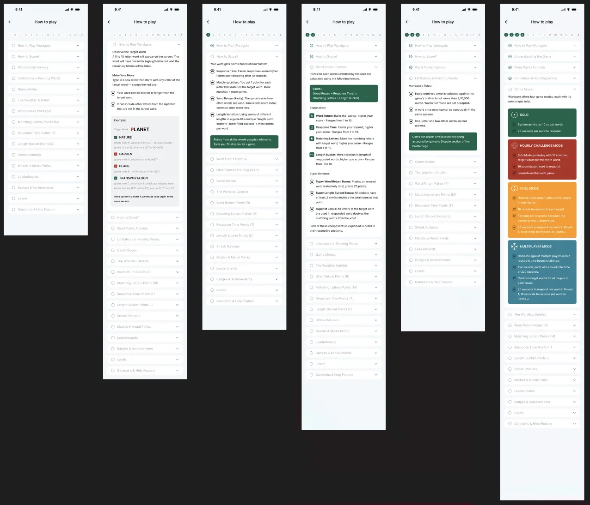
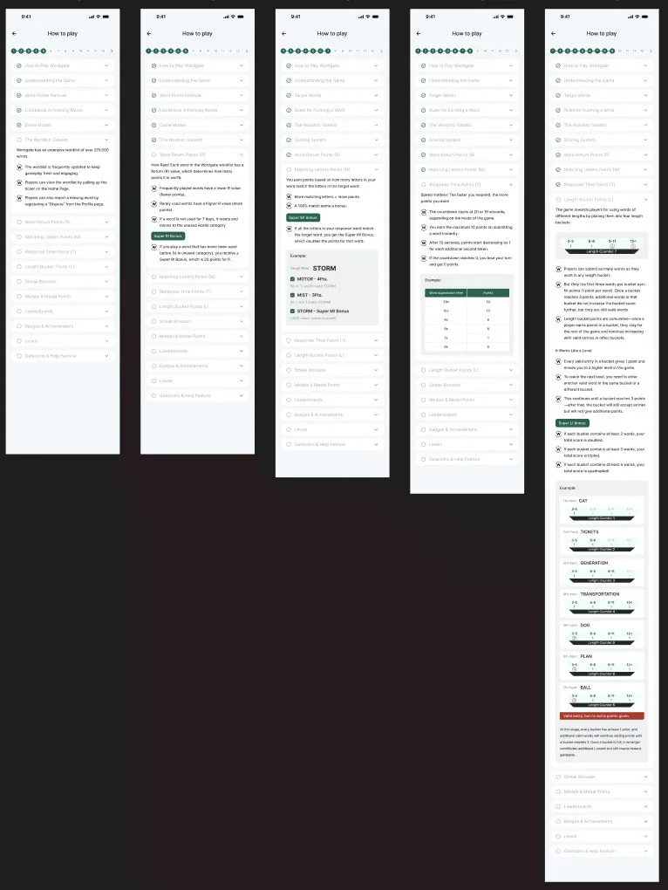
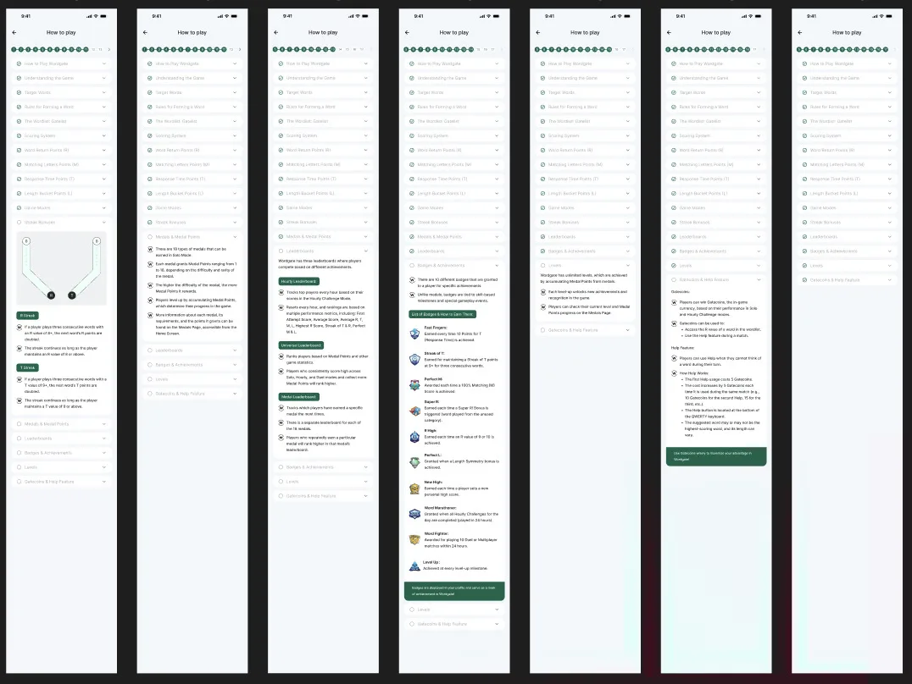
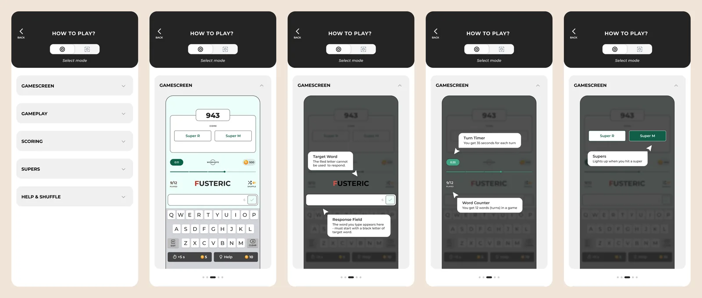
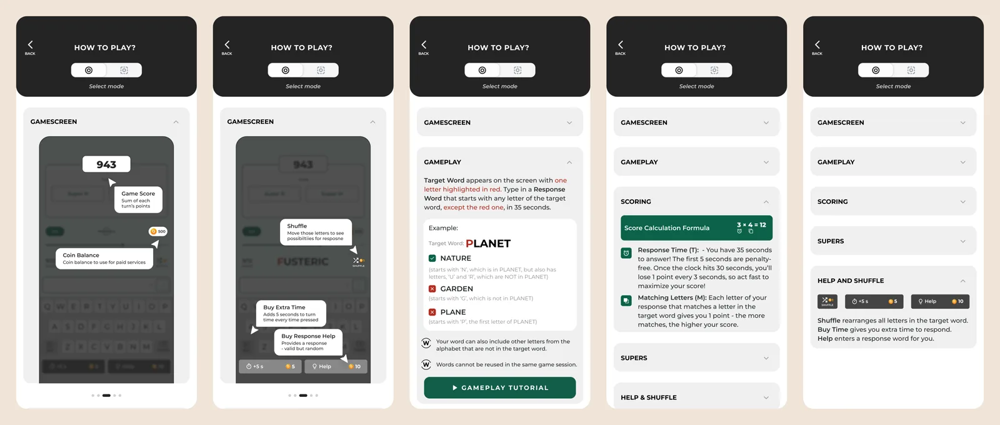

Wordgate
Full Product Redesign
Wordgate is a strategy word game that had already shipped to an early user group. Based on their feedback, the entire app needed rethinking. As the sole designer on the project, I owned that rework end-to-end, working alongside one developer for implementation.
UX Design Intern
Summer 2026
80+ Screens Shipped
NDA — Limited Preview
What I Did
- Rebuilt the information architecture for the whole app from scratch
- Designed a new end-to-end design system
- Delivered 80+ production-ready screens
- Handled dev handoff for every screen
A Problem Worth Mentioning
How to Play. An 18-page wall of text was losing new players before they understood the game. I restructured it into 4 short, mode-specific sections, replacing dense paragraphs with visual step-throughs. Rules became something players saw, not read.



Selected Screens
Full case study private due to an active NDA, sharing a limited set of screens below.

